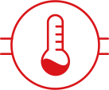

El sistema se compone de:
1
Sensores de temperatura

Dispuestos en cada fogón de la estufa que monitorean constantemente su temperatura
De esta manera el sistema reconoce que los fogones estan funcionando correctamente